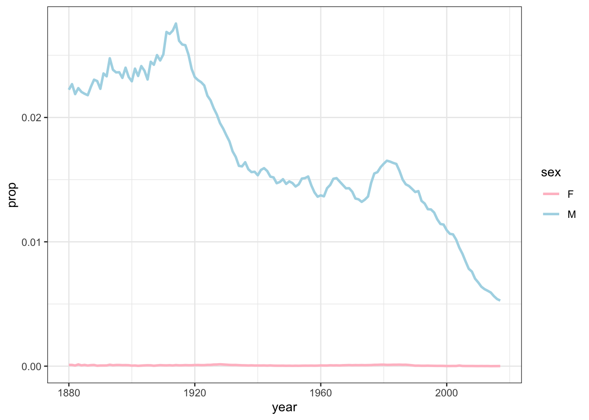
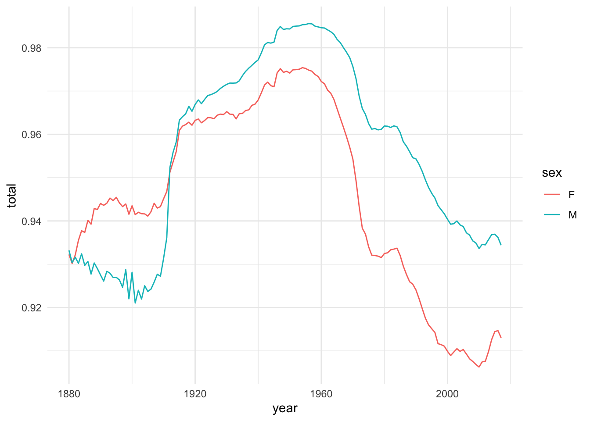

options(dplyr.summarise.inform = FALSE)Recently, on RWeekly.org, I saw that Hadley Wickham’s babynames package had been updated. I had never heard of it, but when I saw that it contained Social Security data for births in the US from 1880 to 2017, I immediately thought that it would make coming up with pseudonyms a lot quicker in the future. So here’s a tutorial on how I’ve done that.
library(tidyverse)Pseudonyms
Lots of linguistic research involves the use of anonymized data. As part of the process of ensuring our participants’ identities, a common practice is to use pseudonyms when referring to them in research papers. My IRB asks that I destroy records of their actual names once data collection is complete, so these pseudonyms are the only way that I can refer to these folks now.
As long as the pseudonym isn’t the person’s actual name, you’re free to call them technically whatever you want. Some people use identifiers that contain lots of metadata (Proj_003_F_1991), but are not particularly personable or easy to read sometimes.
I suppose you could use whimsical names like Spiderman and Batman, but that might not be the most professional or respectful.
I like to take a more personal approach and give them real, plausible names, leaving the metadata to other spreadsheets. Tagliamonte (2006:51) and Schilling (2013:253–254) both recommend this approach. It gives a little more life to any quotations you might pull from the interviews and the names are easier to remember, which is helpful not only for yourself but also for your readers if you use multiple quotes from any one person (especially when spread across multiple papers).
Tagliamonte, Sali A. (2006) Analysing sociolinguistic variation. Cambridge: Cambridge University Press.
Schilling, Natalie. (2013) Sociolinguistic fieldwork. Cambridge: Cambridge University Press.
Schilling, Natalie. (2013) Sociolinguistic fieldwork. Cambridge: Cambridge University Press.
Exactly how you choose these pseudonyms is up to you, but typically you pick something that is consistent with the age, gender, and ethnicity of the speaker. As it turns out, you can use the babynames package to help automate some of this name selection. (Edit: The code for this post is now available on GitHub.)
The babynames package
Some R packages contain lots of new functions that perform some task. Others, like the babynames package, just contain data. Specifically, it contains all the baby names registered by Social Security from 1880 to 2017 There are four datasets here, but the one that I’ll focus on is simply called babynames. Let’s load the data and see what it looks like:
Okay, almost all of them: names that were used less than five times in a year are not released by Social Security for privacy concerns. This makes up 2%–9% of people each year.
#install.packages("babynames")
library(babynames)To access the data, I’ll type babynames::babynames. The first babynames refers to the package, and the second refers to the dataset called babynames within that package. Slightly confusing, but no biggie.
head(babynames::babynames)# A tibble: 6 × 5
year sex name n prop
<dbl> <chr> <chr> <int> <dbl>
1 1880 F Mary 7065 0.0724
2 1880 F Anna 2604 0.0267
3 1880 F Emma 2003 0.0205
4 1880 F Elizabeth 1939 0.0199
5 1880 F Minnie 1746 0.0179
6 1880 F Margaret 1578 0.0162A you can see, it contains five columns. The year, sex, and name columns are straightforward. The last two, n and prop, help give you an idea of how common the name was, with n being the number of babies born that year with that name and prop being the proportion of babies that year with that name for that sex.
As it turns out, this dataset is a lot of fun to play with. I’ll let you explore what you want, but this is nice to see trends for a specific name over time and other stuff. I’ve got a bonus section down at the bottom where I make a couple plots.
Assigning a single pseudonym
So, with this dataset, we can easily filter out names from a specific year and sex and then sort them by frequency to get a quick list of what the most common names were that year:
babynames::babynames %>%
filter(year == 1989, sex == "M") %>%
arrange(-prop) %>%
head(n = 11)# A tibble: 11 × 5
year sex name n prop
<dbl> <chr> <chr> <int> <dbl>
1 1989 M Michael 65382 0.0312
2 1989 M Christopher 53176 0.0254
3 1989 M Matthew 45371 0.0217
4 1989 M Joshua 44090 0.0210
5 1989 M David 35216 0.0168
6 1989 M Daniel 34998 0.0167
7 1989 M Andrew 34811 0.0166
8 1989 M Justin 32842 0.0157
9 1989 M James 32698 0.0156
10 1989 M Robert 30064 0.0143
11 1989 M Joseph 29869 0.0143Oh, hey, me, there in 11th place. Other than showing my name there, this code actually illustrates the gist of what I want to show. If I had interviewed a man who was born the same year as me, this is a list of 11 possible pseudonyms I could choose from.
We could take this a little further and actually turn it into a function. Doing so can really simplify the script quite a bit when I search for lots of names. I’ll also add an argument specifying how many names to show, with 10 as the default.
show_nyms <- function(yob, sx, n = 10) {
babynames::babynames %>%
filter(year == yob, sex == sx) %>%
arrange(-prop) %>%
head(n = n)
}
show_nyms(1989, "M")# A tibble: 10 × 5
year sex name n prop
<dbl> <chr> <chr> <int> <dbl>
1 1989 M Michael 65382 0.0312
2 1989 M Christopher 53176 0.0254
3 1989 M Matthew 45371 0.0217
4 1989 M Joshua 44090 0.0210
5 1989 M David 35216 0.0168
6 1989 M Daniel 34998 0.0167
7 1989 M Andrew 34811 0.0166
8 1989 M Justin 32842 0.0157
9 1989 M James 32698 0.0156
10 1989 M Robert 30064 0.0143show_nyms(1995, "F", 5)# A tibble: 5 × 5
year sex name n prop
<dbl> <chr> <chr> <int> <dbl>
1 1995 F Jessica 27935 0.0145
2 1995 F Ashley 26602 0.0138
3 1995 F Emily 24380 0.0127
4 1995 F Samantha 21645 0.0113
5 1995 F Sarah 21376 0.0111From here, you can choose a pseudonym that you feel is appropriate for that person. Unfortunately, because race and ethnicity data are not included here, if your speaker is part of a minority group and you would like their pseudonym to reflect their identity that more visibly, these names might not be the most appropriate since White Americans dominate this dataset. In such cases, you might set n to a larger number and scan through to find a more suitable name for your speaker if you want.
Filtering out existing pseudonyms
Okay, so this works really well for when you want to find a single pseudonym. However, a lot of us have studies that include multiple people, perhaps a couple dozen. Large projects have hundreds of names. We’ll get to how to automate this process later, but the first thing we want to watch out for is duplicate names. Michael has been one of the most common male names for decades. If we just went with what the most common names were during our participants’ years of birth, we’d end up with a whole bunch of Michaels.
What we need to do is display the most names that were common for that year—except for the ones that we’ve already used. It’s probably not a good idea to use the same pseudonym within a project. I don’t even like repeating names across projects. So if Michael was used for a speaker in my very first project, I’ll never use that name again. Because I’ve recorded a lot of nineties babies, my latest batch of interviewees are getting some unusual names, so I’ve resorted to using alternative forms, like Mike, which I resisted initially, but have come to accept.
They were from Utah anyway, so it fits.
Anyway, all this is to say that you’ll need a way to keep track of what names you’ve used. Probably the most straightforward way to do this is to use whatever metadata spreadsheet you have for your project. Once you’ve chosen a name for one person, save it to your spreadsheet. When you want to choose a name for someone else, reread the spreadsheet again, pull out the pseudonym column, and exclude names that are in that list. Here’s a sample metadata spreadsheet I’ve created:
used_names <- read_csv("sample_metadata.csv", show_col_types = FALSE) %>%
print()# A tibble: 100 × 3
name sex yob
<chr> <chr> <dbl>
1 Michelle F 1998
2 Natalie F 1993
3 Rebecca F 1998
4 Mary F 2000
5 Ashley F 1999
6 Maria F 1997
7 Samuel M 1991
8 Victoria F 1997
9 Shelby F 1996
10 Rachel F 1990
# ℹ 90 more rowsSo, what we’ll need to do is update our show_nyms function to exclude these 100 names:
show_nyms <- function(yob, sx, n = 10) {
babynames::babynames %>%
filter(year == yob, sex == sx,
!name %in% used_names$name) %>% # <- exclude these names
arrange(-prop) %>%
head(n = n)
}
show_nyms(1989, "M")# A tibble: 10 × 5
year sex name n prop
<dbl> <chr> <chr> <int> <dbl>
1 1989 M Jeffrey 12012 0.00573
2 1989 M Travis 11523 0.00550
3 1989 M Dustin 9720 0.00464
4 1989 M Paul 9029 0.00431
5 1989 M Jesse 8855 0.00423
6 1989 M Scott 8851 0.00422
7 1989 M Gregory 8757 0.00418
8 1989 M Kenneth 8556 0.00408
9 1989 M Derek 8362 0.00399
10 1989 M Corey 8003 0.00382Now I can see new names that I’ve never used before. For funsies, I like to see what rank those candidate names are for that year. I can do that by adding rowid_to_column, but I’ll have to do this before filtering out the used names and after filtering for year and sex, so I’ll have to split the filter up a little bit:
show_nyms <- function(yob, sx, n = 10) {
babynames::babynames %>%
filter(year == yob, sex == sx) %>%
arrange(-prop) %>%
rowid_to_column("rank") %>% # <- add rank for each year
filter(!name %in% used_names$name) %>%
head(n = n)
}
show_nyms(1989, "M")# A tibble: 10 × 6
rank year sex name n prop
<int> <dbl> <chr> <chr> <int> <dbl>
1 37 1989 M Jeffrey 12012 0.00573
2 41 1989 M Travis 11523 0.00550
3 48 1989 M Dustin 9720 0.00464
4 49 1989 M Paul 9029 0.00431
5 50 1989 M Jesse 8855 0.00423
6 51 1989 M Scott 8851 0.00422
7 52 1989 M Gregory 8757 0.00418
8 53 1989 M Kenneth 8556 0.00408
9 54 1989 M Derek 8362 0.00399
10 55 1989 M Corey 8003 0.00382Okay so it looks like the first 36 most common boy names in 1989 are already used. These are definitely still common names, but like my high school class probably only had about one of each.
So let’s say I’ve chosen Jeffrey as the new name for my 101st participant. I’ll go ahead and add that to my sample_metadata.csv spreadsheet, save it, and rerun this entire script. Actually, rather than reading it in fresh every time, we could just read it in as a part of the function:
show_nyms(1989, "M") %>%
filter(name == "Jeffrey") %>%
select(name, sex, yob = year) %>%
write_csv("sample_metadata.csv", append = TRUE)show_nyms <- function(yob, sx, n = 10) {
# Read in the used names
used_names <- read_csv("sample_metadata.csv", show_col_types = FALSE)
# Find the candidate names
babynames::babynames %>%
filter(year == yob, sex == sx) %>%
arrange(-prop) %>%
rowid_to_column("rank") %>%
filter(!name %in% used_names$name) %>%
head(n = n)
}
show_nyms(1989, "M")# A tibble: 10 × 6
rank year sex name n prop
<int> <dbl> <chr> <chr> <int> <dbl>
1 41 1989 M Travis 11523 0.00550
2 48 1989 M Dustin 9720 0.00464
3 49 1989 M Paul 9029 0.00431
4 50 1989 M Jesse 8855 0.00423
5 51 1989 M Scott 8851 0.00422
6 52 1989 M Gregory 8757 0.00418
7 53 1989 M Kenneth 8556 0.00408
8 54 1989 M Derek 8362 0.00399
9 55 1989 M Corey 8003 0.00382
10 56 1989 M Bryan 7852 0.00375So once I’ve saved Jeffrey into my spreadsheet, I can just run this show_nyms function and it’ll read in the spreadsheet, check against names that already exist, and find more appropriate names. Next on my list would be Travis, ranking as the 41st most common baby boy name in 1989. Pretty cool.
Ignore names
At some point, you may run into a name that you just don’t want to use. There were some names I just didn’t like for whatever reason. More likely though was that there were alternative spellings of names that I’ve already used. Like Corey instead of Cory or maybe Kathy instead of Cathy. For these homophonous names, I just don’t want to use them to avoid potential confusion. In other cases, I chose a name but decided to go for the shortened version, like Pat instead of Patrick, so I’d need a way to ignore Patrick even though Pat is in my metadata spreadsheet. What I’ll need to do is come up with a separate list of names that I have not used but I want my function to ignore. You have two options: create a separate spreadsheet like your metadata spreadsheet, or just create and maintain the list in the R script itself. It’s up to you which one you do but I’ll create the list in R.
What names should I ignore? For this walk-through, I’ll take a look at girls’ names born in 1995.
show_nyms(1995, "F")# A tibble: 10 × 6
rank year sex name n prop
<int> <dbl> <chr> <chr> <int> <dbl>
1 43 1995 F Sydney 7358 0.00383
2 49 1995 F Erin 6564 0.00342
3 52 1995 F Brooke 6374 0.00332
4 53 1995 F Marissa 6082 0.00317
5 55 1995 F Andrea 6009 0.00313
6 57 1995 F Miranda 5978 0.00311
7 58 1995 F Paige 5733 0.00298
8 59 1995 F Katelyn 5573 0.00290
9 60 1995 F Sierra 5494 0.00286
10 61 1995 F Gabrielle 5447 0.00284So here, I’d want to ignore Erin (not to confuse with Aaron) and Katelyn (I’ve already got Kaitlyn), so I’ll create a list called ignored_names with those two as starters.
ignored_names <- c("Erin", "Katelyn")I can now update my show_nyms function one last time to ignore these too:
show_nyms <- function(yob, sx, n = 10) {
# Read in the used names
used_names <- read_csv("sample_metadata.csv", show_col_types = FALSE)
# Find the candidate names
babynames::babynames %>%
filter(year == yob, sex == sx) %>%
arrange(-prop) %>%
rowid_to_column("rank") %>%
filter(!name %in% used_names$name,
!name %in% ignored_names) %>% # <- ignore these names
head(n = n)
}
show_nyms(1995, "F")# A tibble: 10 × 6
rank year sex name n prop
<int> <dbl> <chr> <chr> <int> <dbl>
1 43 1995 F Sydney 7358 0.00383
2 52 1995 F Brooke 6374 0.00332
3 53 1995 F Marissa 6082 0.00317
4 55 1995 F Andrea 6009 0.00313
5 57 1995 F Miranda 5978 0.00311
6 58 1995 F Paige 5733 0.00298
7 60 1995 F Sierra 5494 0.00286
8 61 1995 F Gabrielle 5447 0.00284
9 62 1995 F Julia 5411 0.00282
10 63 1995 F Vanessa 5403 0.00281Now those two are ignored from my list. So it’s as easy as just creating a list of names you want to ignore. If you’d like you can incorporate that list into the function itself, which will ensure that the function takes into account the most up-to-date list:
show_nyms <- function(yob, sx, n = 10) {
# Read in the used names
used_names <- read_csv("sample_metadata.csv", show_col_types = FALSE)
# List of ignored names
ignored_names <- c("Erin", "Katelyn")
# Find the candidate names
babynames::babynames %>%
filter(year == yob, sex == sx) %>%
arrange(-prop) %>%
rowid_to_column("rank") %>%
filter(!name %in% used_names$name,
!name %in% ignored_names) %>%
head(n = n)
}So now with this show_nyms function, all I need to do is call it once and it’ll show me the best names to choose from. When I choose a name, I’ll add it to my metadata spreadsheet and save. If there’s a name I see and want to ignore, I’ll add it to my ignored_names list. I’d then go through one at a time and choose pseudonyms for all my participants.
Automate all this
Currently, the show_nyms function is great for one-at-a-time stuff. If you’re actively doing fieldwork, you might only add a couple people a day, and it would be a piece of cake to run this function a couple times. Furthermore, since you know these people personally, you might want to spend a moment to decide on the most appropriate pseudonym given the top 10 or whatever.
Other times, you might just want to automate all this and assign whatever name shows up at the top of the list. Like if you’ve got 1,000 pseudonyms to dish out, you might not want to sit there and decide on every one. We can modify our existing code to do this task, making sure to not give two people the same name.
Okay, so the first thing I’ll do is create a new function. The old one was show_nyms. This one is slightly different so I’ll call it assign_nyms because it’ll return the top one. Because I don’t need to specify how many to print, I’ll remove the n argument. I’ll also take out the head(n = n) line, and replace it with pull(name) and then first() so that it gets just the first name itself and not any other information associated with it.
In order to pull off not assigning the same name twice, I’ll need to add a new argument, ignore. This will be the running list of names I’ve already assigned. I’ll give it a default list that is 1 element long ("Joey") so the code doesn’t break. In the filter function, I’ll add yet another filter saying to only return names that are not in this list.
assign_nym <- function(yob, sx, ignore = c("Joey")) {
# Read in the used names
used_names <- read_csv("sample_metadata.csv", show_col_types = FALSE)
# List of ignored names
ignored_names <- c("Erin", "Katelyn")
# Find the candidate names
babynames::babynames %>%
filter(year == yob, sex == sx) %>%
arrange(-prop) %>%
rowid_to_column("rank") %>%
filter(!name %in% used_names$name,
!name %in% ignored_names,
!name %in% ignore) %>% # <- ignore names I just assigned
pull(name) %>%
first()
}Okay, so to use this new function, I’ll create a dummy list of randomly generated birth years between 1990 and 2000, with alternating sexes. I’ll also create an empty list for the name because the code depends on there being something there the first time though.
to_be_named <- tibble(yob = sample(1990:2000, 100, replace = TRUE),
sex = rep(c("F", "M"), 50),
name = rep("", 100))
head(to_be_named)# A tibble: 6 × 3
yob sex name
<int> <chr> <chr>
1 1999 F ""
2 1991 M ""
3 1999 F ""
4 1990 M ""
5 1990 F ""
6 1993 M "" Now, I’m a fan of using functions to iterate through things in R and I’ve done it many times. In general, for loops are ignored (and even frowned upon) in R code because they’re supposedly slow. But, Hadley Wickham has said that they are not slow, and since I’ve already allocated memory space for the names to go (the new name column in my to_be_named data frame), it shouldn’t be too bad. Furthermore, he said that loops are the only solution when one iteration depends on the values in some other row, which is the case here.
I tried using
purrr::map for this, but just couldn’t get it figured out and it wasn’t worth the effort for this post.So, I’ll write a for loop that assigns a new name for every row of my 100-row dataframe of generated data. The first two arguments of assign_nym are the same as we’ve seen before (I’ve added the argument names just to be clear what I’m doing). But the third one is where I make sure it doesn’t assign two names twice. I’ve included the argument ignore = to_be_named$name[1:i] because that’s the list of names that have already been assigned in this loop. When that gets sent to assign_nym, it becomes the ignore argument (replacing the default "Joey"), and then when the function is filtering out names, it’ll make sure not to let those go through.
for (i in 1:nrow(to_be_named)) {
to_be_named$name[[i]] <- assign_nym(yob = to_be_named$yob[[i]],
sx = to_be_named$sex[[i]],
ignore = to_be_named$name[1:i])
}The result is that to_be_named now has the name column populated with new, unique pseudonyms that are appropriate for their age and sex.
to_be_named# A tibble: 100 × 3
yob sex name
<int> <chr> <chr>
1 1999 F Emma
2 1991 M Travis
3 1999 F Sydney
4 1990 M Jesse
5 1990 F Erica
6 1993 M Alex
7 1994 F Andrea
8 1994 M Juan
9 1995 F Brooke
10 1998 M Noah
# ℹ 90 more rowsFortunately, because this list is deterministic and it’ll be the same every time you run the code, if you scan through and see names you don’t like, you can update your ignored_names list and rerun it. So, I found that Corey, Briana, and Shawn were in there and I don’t want to confuse them with the homophonous names Cory, Breanna, and Sean. When I remove those, every thing up until them will be the same, but from then on there will be some differences.
assign_nym <- function(yob, sx, ignore = c("Joey")) {
# Read in the used names
used_names <- read_csv("sample_metadata.csv", show_col_types = FALSE)
# List of ignored names
ignored_names <- c("Erin", "Katelyn", "Corey", "Briana", "Shawn")
# Find the candidate names
babynames::babynames %>%
filter(year == yob, sex == sx) %>%
arrange(-prop) %>%
rowid_to_column("rank") %>%
filter(!name %in% used_names$name,
!name %in% ignored_names,
!name %in% ignore) %>%
pull(name) %>%
first()
}
for (i in 1:nrow(to_be_named)) {
to_be_named$name[[i]] <- assign_nym(to_be_named$yob[[i]],
to_be_named$sex[[i]],
to_be_named$name[1:i])
}
to_be_named# A tibble: 100 × 3
yob sex name
<int> <chr> <chr>
1 1999 F Sydney
2 1991 M Jesse
3 1999 F Emma
4 1990 M Travis
5 1990 F Amy
6 1993 M Juan
7 1994 F Marissa
8 1994 M Alex
9 1995 F Andrea
10 1998 M Hunter
# ℹ 90 more rowsSo that was quick. This could theoretically be expanded to include a thousand names and it would work just fine. You might end up with some unusual names, but this will in principle work so long as you haven’t exhausted all the names. And it would take a ton of people do to do. Here’s what the last 10 names are in my sample of 1000 people.
to_be_named <- tibble(yob = sample(1990:2000, 1000, replace = TRUE),
sex = rep(c("F", "M"), 500),
name = rep("", 1000))
for (i in 1:nrow(to_be_named)) {
to_be_named$name[[i]] <- assign_nym(to_be_named$yob[[i]],
to_be_named$sex[[i]],
to_be_named$name[1:i])
}
tail(to_be_named, n = 10)# A tibble: 10 × 3
yob sex name
<int> <chr> <chr>
1 1991 F Shana
2 1992 M Earl
3 2000 F Zoey
4 1995 M Kurtis
5 2000 F Alayna
6 1991 M Norman
7 2000 F Lilly
8 1991 M Bret
9 1993 F Paris
10 1996 M RaekwonSo with just a couple lines of code, you can very quickly assign age- and sex-appropriate pseudonyms to all your participants.
Conclusion
Finding pseudonyms is not the most important part of your research, but it is likely a necessary step. I figure it’s nice to use R to help you out even on the little stuff.
Bonus
Here are just some fun plots I made when playing around with the data. This first one shows the trends for the name Parker, which my wife and I considered for our daughter. This plot shows that there would have been many more boys her age with that name than girls.
babynames::babynames %>%
filter(name == "Parker") %>%
ggplot(aes(year, y = prop, color = sex)) +
geom_line(size = 1) +
scale_color_manual(values = c("pink", "lightblue")) +
theme_bw()Warning: Using `size` aesthetic for lines was deprecated in ggplot2 3.4.0.
ℹ Please use `linewidth` instead.
My given name, Joseph, has historically been among the most common male names. Through about the 1920s, at least 1 in 50 baby boys were called Joseph. There was a drop in frequency between the World Wars and in the 1980s it started becoming less common. Ever since then there have been fewer and fewer Josephs born. If this trend continues, Joseph will become old-fashioned as I age, which is kinda fun to think about.
babynames::babynames %>%
filter(name == "Joseph") %>%
ggplot(aes(year, y = prop, color = sex)) +
geom_line(size = 1) +
scale_color_manual(values = c("pink", "lightblue")) +
theme_bw()
Finally, the plot below was just an interesting one that shows the diversity in names. I add up the total proportion of people per year are represented in this dataset. Remember that this dataset does not include names if fewer than five people in a year had that name. So if all the data adds up to only 0.96, then 4% of people that year had somewhat unusual names. The higher number is, the fewer uncommon names there were. This chart shows that compared to the 1960s, there are more unusual names, particularly among the women. I’ll let the folks in onomastics interpret this, but I thought it was kind of a fun graph.
babynames::babynames %>%
group_by(year, sex) %>%
summarize(total = sum(prop)) %>%
ungroup() %>%
ggplot(aes(year, total, color = sex)) +
geom_line() +
theme_minimal()
That’s all! Have fun with babynames!